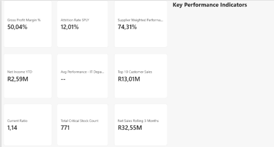
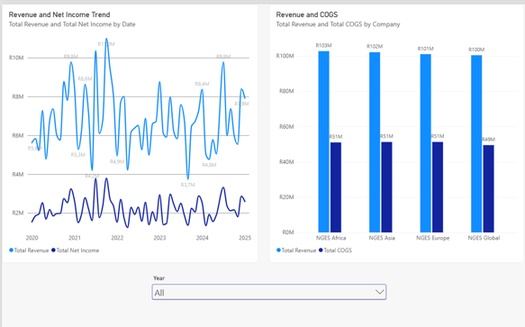
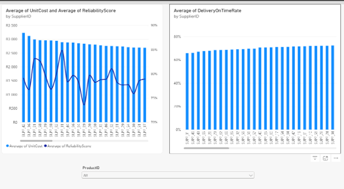
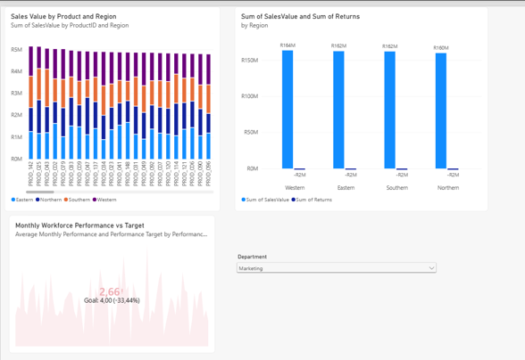
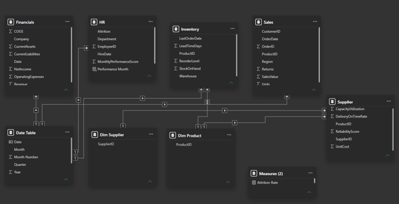

An end-to-end Power BI business intelligence solution integrating financial, workforce, inventory, supplier and sales data into a decision-ready management environment.
Reusable DAX measures translate the underlying model into a concise management KPI layer spanning profitability, liquidity, workforce risk, supplier performance, inventory exposure and customer value.

The project was designed to give management a single place to monitor profitability and liquidity, identify workforce and supplier risks, control critical stock and compare sales and returns across regions.
Net income increased from approximately R22.95m in 2022 to R26.24m in 2023 before easing to R23.88m in 2024.
Revenue remained close to R100m–R103m per company while COGS stayed around R49m–R51m, consistent with the overall 50.04% gross margin.


The overall weighted supplier score is 74.31%, combining reliability, delivery and capacity utilisation.
SUPP_78 was identified as the highest-risk supplier at 69.08%, with capacity performance representing the largest weakness.
The project also identified 771 critical-stock records overall, including 191 in the North Warehouse where stock on hand was below reorder level.
Regional sales were broadly balanced, with Western at R163.55m, Eastern R162.42m, Southern R162.07m and Northern R159.85m.
Northern recorded the highest negative-return ratio at approximately 1.03%, while Marketing recorded the highest attrition rate at 13.28%.
When Marketing was selected, workforce performance measured 2.66 against a 4.0 target.

Gross margin remains healthy, but net-income momentum softened in 2024 and liquidity cover narrowed slightly after improving in 2023.
Marketing, Logistics and Admin show the highest attrition rates, supporting targeted departmental intervention rather than a broad organisation-wide response.
Weak supplier capacity combined with North Warehouse stock exceptions creates exposure to delayed fulfilment and lost sales.
Regional sales are relatively balanced, while Northern returns and high-value customer relationships warrant closer management.
Place SUPP_78 on a 90-day improvement plan with agreed capacity, reliability and delivery targets. Identify critical products linked to the supplier, establish backup sources where practical and review reorder levels and safety stock for the North Warehouse exceptions.
Begin with Marketing, Logistics and Admin using stay interviews, exit analysis, workload and pay reviews, and manager-level action plans. Track progress against the 2023 attrition baseline and the 4.0 performance target.
Date, Product and Supplier dimensions were created to support consistent one-to-many, single-direction filtering across the related fact tables. Model validation confirmed that slicers affected only the intended analytical contexts and avoided ambiguous filter paths.

Data cleaning, type validation and date standardisation.
Shared dimensions, one-to-many relationships and controlled filter paths.
Time intelligence, weighted measures, rankings and management KPIs.
Interactive dashboards, slicer behaviour and management-focused narrative.
The complete case study covers data preparation, modelling decisions, KPI design, dashboard analysis, management findings, recommendations and the technical reasoning behind the Power BI solution.
Open Case Study PDF